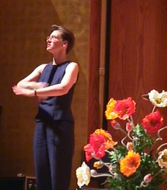

(From 546 GA Closing Celebration.)
Most of my experience translating music is for religious services, but I have had some experience with secular choruses and soloists. Most of the principles I suggest here could be applied to any song. I prefer to interpret songs that have a message, either religious or ethical, rather than those of the "Ooo, baby, baby" variety. To understand my glossing system for ASL in this document, see Glossing system used. See Bar-Tzur, D. Professional development: Web sites - Artistic interpreting for many videos of song interpretation.
A sung text is harder to parse [catch the wording] than a spoken text. Before Wagner, libretti [scripts that show the words being sung] were distributed to the audience and the lights were left on so that the audience would understand what was being sung. It is even more difficult to understand choral lyrics, due to staggered parts. My ideal is to write out a gloss that will tell me how to sign the songs I will perform. In this way I can make cultural and linguistic adjustments as I shall discuss at length below. Some people translate the song as poetry and ignore the rhythm, repetition, rhyme scheme, or pausing. Others try to make the interpretation match the song in some ways. Get the number of the music director, soloist or small group and get the lyrics or attend their rehearsals.
Please watch sign language singers without sound. See how much you can understand and what your experience would be if you were totally deaf. They look very engaged in their music, and they are having a good time. Could you understand it? Now listen to the audio while you watch it. You can be very artistic but not very comprehensible. I do love watching this video, but I realize that it is not easy to understand. For Deaf people and others that want to see the words to this song, go to Change a Heart, Change the World - Jump5. So we come to our first principle:
(1) Try to strike a balance between poetry and producing a clear message. You saw the signers move around too much and clarity was compromised. Don't distort the signs so much or move so much that the message is not clear. I know there are also changes in camera angle, but see if you can understand when the perspective is static as well. This is not to say that you must remain rigid throughout the interpretation. Watch Real Love (ASL) to see a rendition with lots of movement that still retains clarity of message.
What changes from a more straightforward translation did you notice? Take a moment to answer this yourself before you see my answers. Negatives become positives: "Love doesn't envy or brag." -> LOVE HUMBLE. "Love is never loud or rude." -> LOVE NICE, FRIENDLY. "Love protects, love will trust." -> JESUS CARES. LOOK-TO-Him. "Love will never let you down, even when prophecies all pass away." -> JESUS~TO-my-HEART STAY@heart THEY WORLD BREAK-DOWN STAY. If I may be a bit critical, I think that the phrase JESUS~TO-my-HEART STAY@heart is over-utilized. It not only translates (1) "Love will never let you down", but also (2) "We'll see Jesus face to face, then we will know, everything will be clear" and (3) "But one thing is certain: only faith, hope and love will remain." But overall it is very well-executed and a clever translation!
I would like to encourage Deaf people to consider interpreting music as a part of their worship or simply as an interpreter. They can do so by having an interpreter feed them, using a script of the music or reading as a guide, or being a sign master who translates the written English into ASL for the interpreter. Here is an example of a highly skilled Deaf person (Trix Bruce) performing a song sung by Celine Dion, showing how exciting interpreting can be. Way beyond my ability, but I still enjoy it as an inspiration: TRIX BRUCE PERFORMS "LOVE CAN MOVE MOUNTAINS".
(2) Paint a visual picture whenever possible. "Your hands have set the heavens with stars; Your fingers spread the mountains and plains. You merely spoke and waters were formed; deep seas obey your voice." -> STAR SCADS-OF1, YOUR HANDS (2h)alt.PUT'into place'. MOUNTAINS, YOU (2h)5:-CL'mold shape'. YOURSELF COMMAND, WATER (2h)5wg-CL'moisture descend' (2h)5-CL'slosh into place'. OCEAN-CHURN LOOK-UP-TO-God RESPECT-God, ACQUIESCE. PSE is not as able to show this well. This is because it is largely meant to follow English structure, which is not intrinsically a visual language. A PSE rendition might look like this: YOUR HANDS FINISH SET HEAVEN WITH STAR. YOUR FINGER SPREAD MOUNTAIN AND GROUND FLAT. YOU JUST TALK AND WATER SHOW-UP. DEEP OCEAN OBEY YOUR VOICE. For a stunning example of clear visualization, see Above All.
ACTIVITY 1: Because this song is slow and doesn't have an obvious beat, I won't give you time to write out a gloss script, but I would like you to get with a partner if you can arrange one (or do this on your own) and plan how you will interpret the song coming up by considering the following: Who are the principal players in this song? Where will you place them in space? How can you make this as visual as possible? Where are the changes in speaker, and how will you show this? Watch/Listen to Nicole Nordeman "Why?" After you have decided your answers, play this again and interpret it. Divide it up if there are two of you. If you want an English script to help analyze the song, see "Why?" - Nicole Nordeman.
(3) Images should be visually accurate and descriptive. "Lift high the Cross." -> NOW CROSS (2h)S-CL'lift cross high', rather than LIFT-UP HIGH CROSS. A cross would be lifted by grasping the lower vertical portion with your hands, not by lifting it up as you would a flat plate, so use the correct handshape. For
(4) Referents should be clear. "This" and "that" need to be restated so it is clear what is being referred to. If you can't point to it with some indication of the kind of thing you are pointing to, then state what it is. "Eat this bread, drink this cup, come to me and never be hungry." -> COME-ON2 (2h)alt.EAT HON.-INDEX3-bread BREAD, (2h)alt.DRINK HON.-INDEX-wine WINE. GOD HELP"all" PREVENT HUNGER FOREVER. Something is needed to replace the English "this" to emphasize that the Eucharist is meant. One can either use the honorific index to point to the altar where the bread and wine are or, if this is awkward, use HIS-Jesus' BREAD.
Similarly with personal pronouns ("he", "she", "they"). "Morning has broken like the first morning. Blackbird has spoken like the first bird. Praise for the singing! Praise for the morning! Praise for them springing fresh from the Word!" PRAISE FOR SING and PRAISE FOR MORNING to me does not clearly show that the referents are the blackbird and the sunrise, and "them" needs to be clearly referred back to, so I have translated: THIS-MORNING SUNRISE, LIKE FIRST TIME GOD CAUSE. BLACK BIRD NOW SING, LIKE FIRST BIRD SING. (<) COME-ON PRAISE BLACK BIRD. (<) COME-ON PRAISE SUNRISE. WHO TEACH TWO-OF-THEM CELEBRATE? GOD HIMSELF HON.-INDEX.
(5) The world "let" ("Let us pray") does not usually mean permission in liturgical English, but is rather an invitation, so something like COME-ON in a beckoning motion is more appropriate than ALLOW. "Let us rejoice and be glad" -> (2h)COME-ON"each" HAPPY CELEBRATE.
(6) When the scriptures anthropomorphize [give human characteristics to animals, plants, or inanimate objects, as in Psalms] make the implicit parallel explicit: "Let the heavens be glad, let the earth now rejoice and sing, let the fields and trees cry out and the oceans thunder praise." -> (2h)COME-ON-heaven ANGEL SHOULD HAPPY. (2h)YOU"all" HERE EARTH COPY-heaven CELEBRATE. NATURE TOO. GRASS (2h)5-CL'grass sways', FOREST (2h)5-CL'trees sway'. NATURE MOVE MEAN DEAF-APPLAUSE. OCEAN CRASH-ON-CLIFF FOR-FOR? PRAISE GOD.
(7) Show chronology or cause and effect. "Bring your offerings into his court" -> ENTER HIS HOUSE, OFFER-TO-God. You must first enter the Temple before you can offer something, and "offering" is really a verb, not a noun, so you can't say BRING OFFER ENTER HIS HOUSE.
(8) Musical lyrics are more poetic, so use ASL poetry as much as you can. Watch tapes of ASL poetry for inspiration and instruction. Play with alliteration (preserving the same handshape, palm orientation or location for added smoothness and charm. "Though you transcend the stars, come close to us and stay by our side." -> KNOW++ STAR SCADS-OF, YOU (2h)SUPREME4 (2h)COME-ON (2h)A-CL'come down to our level'5 GO-TOGETHER6 US PLEASE. Using (2h)COME-ON with the hands staying in much the same place is smoother than signing BUT. SUPREME, the (2h)[A] from SUPREME brings the dominant hand down to the level of the non-dominant hand, and GO-TOGETHER all use the same handshape.
(9) Similes and metaphors can be established by the signs IDEA~LIKE and PARALLEL7. A simile makes an unusual comparison for poetic effect and uses the word "like" or "as": "Life is like a box of chocolates." A metaphor drops the word "like" or "as" and equates them: "Life is a box of chocolates." The first sign blends IDEA and LIKE in one sweep. Simile - "For You I thirst, as the dry earth for water. Lifeless and parched, without you I am nowhere, no one at all." -> I THIRST IDEA~LIKE EARTH DRY NEED RAIN. PARALLEL WITHOUT YOU, ME LIKE PLANT DRY PLANT-WITHER8 WORTHLESS. Metaphor - "My life flows on in endless song" -> (a) MY LIFE SMOOTH IDEA~LIKE MUSIC or (b)... IDEA~LIKE POETRY9 DO-ASL10.
(10) Too many sound metaphors will fall on deaf ears, so try to relate it to something other than sound. "Through all the tumult and the strife, I hear that music ringing; it sounds and echoes in my soul; how can I keep from singing?" -> EVERYDAY PEOPLE THEY-lf STRUGGLE. ME (2h)PSHAW11, LOOK-FROM-lf-TO-God. MY SOUL CONNECTED-TO-God GOD. ME CELEBRATE"over time" MUST.
(11) In line with ASL topicalization, an object should generally be stated before something is done to it. "God's right hand made a path through the night, split the waters of the sea." -> NIGHT DARK AWFUL, WORRY NONE. GROUP GROUP-GET-THROUGH12 HOW? HE SHOW-us. OCEAN, HE SEPARATE. WE THROUGH'slow' CAN.
(12) There are so many metaphors that are used repeatedly in scriptures that some songs will throw them at you left and right. Try to get to the heart of the meaning and connect them together in one long visual image instead of a series of disconnected images. "You who dwell in the shelter of the Lord, who abide in his shadow for life, say to the Lord, 'My refuge, my rock in whom I trust.' And he will raise you up on eagle's wings, bear you on the breath of dawn, make you to shine like the sun and hold you in the palm of his hand." -> DURING (2h)YOU LIVE, LORD PROTECT, IDEA~LIKE SHADOW PREVENT SUNSHINE FAINT. TELL THE-ctr LORD, (role play to God) YOU-ctr HELP-me ESCAPE, ME TRUST MY FOUNDATION CAN. (end role play) GOD NURTURE13 YOU"all" THINK~LIKE EAGLE FLAP-WINGS14, DAWN SHINE-ON-me TRAVEL'spiral upwards' STILL. GOD NURTURE (2h)YOU SAME.
(13) Sentences may need to be restructured so that the focus is first. "Eye has not seen, ear has not heard what God has ready for those who love him." -> HEAVEN "WHAT"? PEOPLE WITNESS15, NOT-YET. PEOPLE KNOW, NOT-YET. BUT IF (2h)YOU"all" LOVE GOD, HE PROMISE BRING-you-TO-Heaven. The second half of this also illustrates that chronological order should be observed. First, people love God, later God brings them to Heaven ("what God has ready").
(14) ASL does not use the passive voice although it may change the focus or perspective of a narrative several times. "Led on their way by this triumphant sign, the hosts of God in conquering ranks combine." -> FAR-AWAY HEAVEN, JESUS LEAD WITH HIS-lf CROSS, ANGEL VARIOUS MARCH++ PROUD. One cannot sign LEAD ON WAY without some mention of who is leading whom, so I have stated the implicit subject of the active verb lead by signing "Jesus". Passives in English become active in ASL. For example, "I am saved by God" -> ME, GOD SAVE rather than ME SAVE B-Y GOD or worse ME SAVE GOD.
As practice with passives, sign the follow in ASL:
I am loved by God.
I am made by God.
I am forgiven by God.
I am accepted by God unconditionally.
I am sustained by God.
I am used by God.
I am enabled by God.
(15) If a song has a word that is drawn out, make it look pretty. If you can read sheet music, you can see that there is a drawing out of the words "called", "justice", "tenderly", "walk", and especially the final word "God". This means something in the translation needs to be drawn out. I have chosen the distributive aspect "each" and GO-TOGETHER, which can be exaggerated and still look aesthetic. GOD CALL"each" JUSTICE16 MUST. HE CALL"each" LOVE SOFT-HEART17. HE CALL"each" HELP"each" EACH-OTHER. GO-TOGETHER GOD, UNDERSTAND HUMBLE.
Some interpreters simply interpret the music as if it were a spoken text with so much lag that there will be no apparent relationship between the signed message and the music. It is a matter of taste, but I think it is nice to try and show that music is happening to convey some of religious culture: the use of rhythm to induce calm or agitation, depending on the music and the denomination. In the Black Deaf community, music is very important and so is the depiction of beat. In the more evangelical churches, the interpreter will look like a fool if s/he merely conveys the meaning of the hymns without throwing her/his whole soul into the rhythm.
ACTIVITY 2: In line with this, we will translate a traditional hymn with a slow tempo: How Great Thou Art [sung] by Alan Jackson. Write out a gloss script or figure out in your head how to deal with the pauses through spatialization, find signs that can be drawn-out without looking unnatural, and use plenty of body and facial affect. Here is an English script with extra spacing to help you write out an ASL script, if you choose to do so: How great Thou art - Stuart K. Hine (script). After you have finished the activity, if you are curious how I translated it, go to How great Thou art - Stuart K. Hine.
(16) Just "beat it". Some interpreters simply interpret the music as if it were a spoken text with so much lag that there will be no apparent relationship between the signed message and the music. It is a matter of taste, but I think it is nice to try and show that music is happening to convey some of religious culture: the use of rhythm to induce calm or agitation, depending on the music and the denomination. In the Black Deaf community, music is very important and so is the depiction of beat. In the more evangelical churches, the interpreter will look like a fool if s/he merely conveys the meaning of the hymns without throwing her/his whole soul into the rhythm.
ACTIVITY 3: Here is an example of a song with an obvious beat: Lord of the Dance. For an English script to work with, go to Lord of the Dance script. After you have finished this activity, if you are curious how I translate it, go to Lord of the Dance - Sydney B. Carter & 19th Century Shaker tune.
(17) Just as we need to culturally mediate some things from Hearing culture that may or may not be known to Deaf people, we need to mediate some religious terms that are even further removed from some Deaf people because they are religious phrases that they may not have been exposed to, just as they would be lost on some non-religious Hearing people. "O Lord, once lifted on the glorious tree" refers to the cross. I would make this explicit: (2h)LONG-AGO LORD, YOU-lf SUFFER, PAIN, DIE.
In this case I did not specifically say "the Cross" to avoid repetition from its use in other verses as well as trying to follow the rhythm and have a smooth flow of signs. Another example is "Take my hand, precious Lord, lead me home." I prefer to make the reference to Heaven explicit: PLEASE (2h)LOOK-DOWN-ON-me LEAD-TO-Heaven HEAVEN, IT-Heaven MY HOME. It's not only because the Deaf congregants may not be familiar with these terms, but because it is in the natural of ASL to be visually and semantically explicit.
(18) If the music has an unnatural break in the pacing of a sentence, the interpreter can either add small things to fill the space or go on slightly as long as the major emphases of the beat are emphasized at the same time with the important signs.
NOT-YET WITNESS, STILL WE LOVE YOU. NOT-YET TOUCH, BUT FEEL CONNECTED. NOT-YET UNDERSTAND FULL, BUT FOLLOW. NOT-YET WITNESS YOU, STILL'stretch' WE BELIEVE. To keep the sign pacing natural, I start some signs noticeably before the corresponding English phrases are sung. This is because the sign WE takes as much time as the verbs LOVE, FOLLOW and BELIEVE, but should be subservient to them in meaning and rhythm. I have also added STILL which is implicit in the meaning of the text, but allows for less of an unnatural pause in the signing.
Related to this, if there is a very long pause at the end of a phrase, you may wish to pick a sign that looks best when drawn out. In the 3 verses above the phrases with a final word to be held are (1) "I am tired, I am weak, I am worn", (2) "When my life is al-most gone", and (3) "And the day is past and gone." I chose to interpret these as follows: (1) ME TIRED*, INSIDE FELL WEAK*. EVERYDAY (2h)alt.FRUSTRATED SICK-OF-IT18. (2) ME OLDER++ TIME DIE ARRIVE"step by step". (3) SUN sun-SET"step by step", LIGHT DISSOLVE. This is because the ends of these phrases can be more aesthetically drawn out than WORN-OUT or GONE, and those words are held for three whole beats.
(19) If a song has lyrics that are repeated ad nauseam (think Handel's "Hallelujah chorus"), do something to relieve the monotony. I once had to interpret a setting of "Gloria in Excelsis Deo" where those 4 words were repeated dozens of times. Rather than repeatedly sign GLORY GOD HIS ADVANCED, I told the story that lead to this exclamation of the angels: the shepherds in their fields, calm cool night in the desert, sheep asleep, shepherds watching them, a sudden outburst of light and the angels begin to sing. On another occasion the chorus sang a contemporary song that repeated the single word "home" 40 or 50 times to experiment with the comforting sound of the word "home". This was in the middle of a concert and I asked the director before he conducted it to please explain to the audience what was happening and why I would not be interpreting this piece. I added in my interpretation to the Deaf people, YOU DON'T-WANT WATCH-me SIGN HOME@cheek, HOME@top of head, HOME@left shoulder, ETC. I know when I'm beat.
Similarly, I interpreted an "Ubi caritas et amor" for a high school concert and that phrase plus "Deus ibi est" are sung over and over again slowly for eight pages. I realized that this is part of a larger antiphon that is sung during the Washing of the Feet at the Mass of the Last Supper on Holy Thursday and often used during the Exposition of the Blessed Sacrament. So I got on the Internet and found the whole text, which is 15 lines long. A much more palatable repetition if necessary. My point is that search engines are your friends when you know what song you are interpreting but you don't have the words, or you are stuck with a "broken record" song.
(20) If the choir or a soloist takes turns with the congregation (such as a refrain), add this information into the interpretation. Signing COPY-me seems a little too coercive to me, I prefer CONGREGATION your-TURN or role play. Or the hearing interpreter might copy the deaf congregants, what a concept!
(21) If a song is funny, have fun with it. I interpreted a song called "Betty Boop and Buddha". It was a silly song with Charleston music during one of the instrumental interludes and so I danced the Charleston on stage. I fingerspelled Betty Boop, but I knew the Deaf audience, which was about 30 feet away would not be able to read it so I struck the famous Betty Boop pose with one leg folded up against the side and the hands up in the air (the give-up gesture). For the Buddha, I fingerspelled but also signed FAT CROSSED-LEGS. The house was brought down, whether by me or the song I do not know, but I had fun!
(22) Another thing that I see happening is fun with choreography. To see some interesting ideas that students have come up with, watch lostaznch1ck. (3 February 2006). Danny's group song final and Maddie's song presentation.
(23) Jazz and some ethnic music may include "scat", which can be dealt with by "reporting", using culturally appropriate gestures, or adding a story line. Scat is really a jazz term and I won't get into its scatological origins (true biz), but it refers to the nonsense words that are sometimes used in songs for their auditory effect. "Strangers in the night" has its "scooby dooby do", Jewish music has its "biddy bim bam bim bam biddy bam", and so on. "Reporting" is a term I invented to label situations where the interpreter simply tells the clients what is happening. For example, a Deaf person is in a mental hospital and is not making complete sense. The interpreter might say, "The Deaf person is exhibiting clang and playing with similar handshapes." When the lyrics are scat, the interpreter could report, NOW SING SOUND WITHOUT MEANING. WHY? SOUND PRETTY. For a country song, the interpreter could clap to the music, or do some country-style steps. In this next video, the signers make up a story that fits with the theme of the song when Michael Jackson become too redundant and when he scats (Whee-hee): Crevis4. (25 April 2006). Beat it in Sign Language.
(24) Foreign language songs should be translated if the interpreter gets them in time. I once interpreted for a celebration of Black music and was told 10 minutes before curtain time that they would be singing the Black National Anthem. When asked in which language, they replied Swahili. I could have just let it slide, but I asked them what it meant, memorized it as best I could and gave it back as an interpretation on stage. Hopefully you will have more prep time. You can sometimes find translations of songs on the Web. Google the title, writers' names, or a portion of the lyrics.
(25) The Trinity should be spatialized. When God is mentioned without specification, I spatialize him in the center. When God the Father is mentioned I spatialize him on the right, so that it will be easy to show Jesus sitting at the right hand of God (which would be my left). I place the Holy Spirit in the middle.
(26) Don't forget to use facial expression to show emotions. Look for example at I Can Only Imagine. This signer is not yet fully mature in his signing, but he beats a lot of interpreters I know in expressing joy in ASL! He is very emotive without exaggeration.
ACTIVITY 4: We will end our hands-on practice with a spirited song that has a fast pace: "Hosanna" by Kirk Franklin. Sung by Korean Father's Love Ministry (FL). Here the beat is not as important as showing the joy of the song.
Footnotes